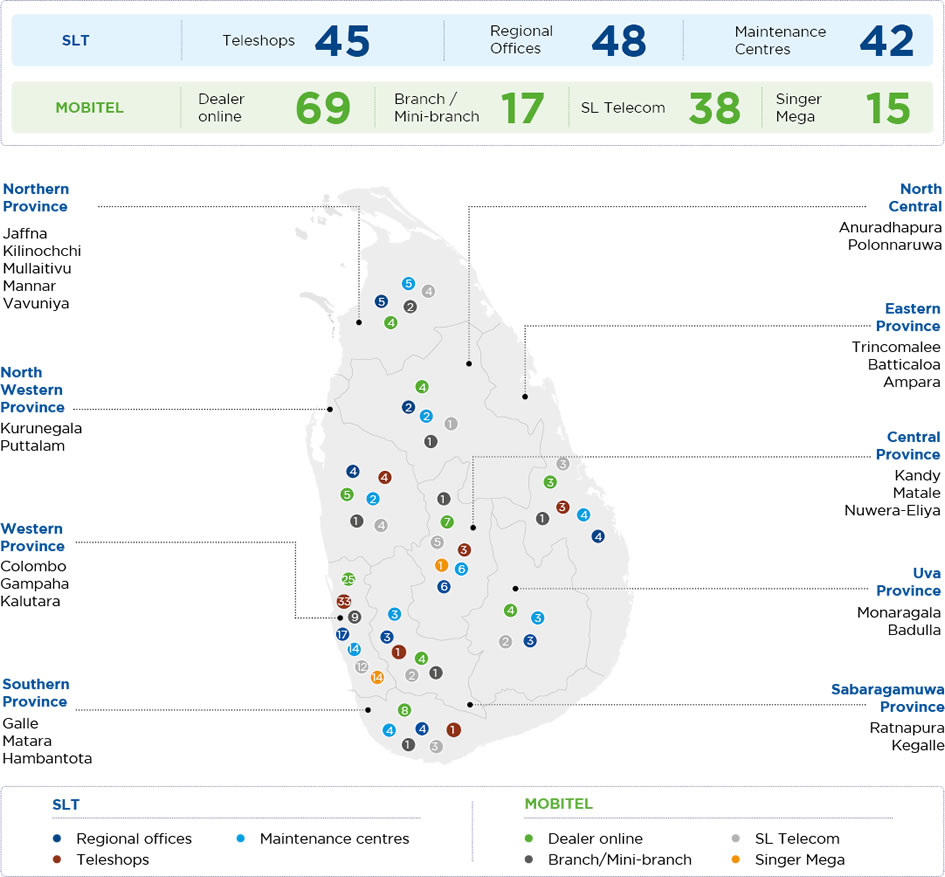
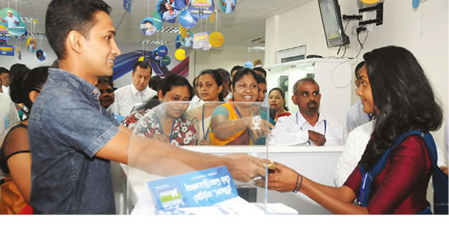
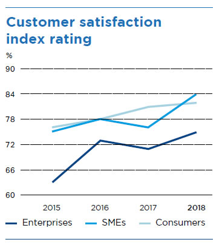
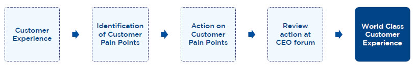
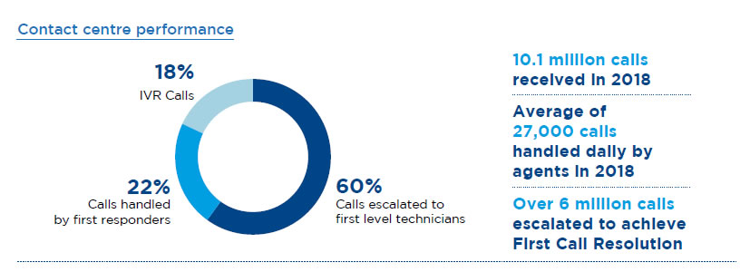
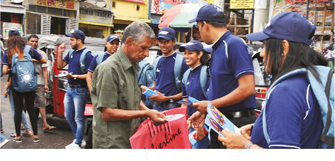
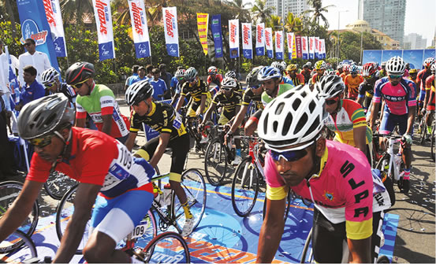

Management discussion and analysis
Customer Capital


The SLT Group serves over seven million customers across the country from individuals to small and medium enterprises (SMEs), multinational corporates, and the public sector. Serving such a broad range of customers in an intensely competitive market that is subject to disruption and transformation requires a focused approach to customer service. SLT has dedicated itself to servicing its existing customers, understanding the needs of its potential customers, and predicting what customers want next before they know it. This is all part of SLT’s transformation into the digital service provider of choice. High quality customer service and outstanding customer experiences are fundamental to customer loyalty and retention, and 2018 saw SLT focus on laying the groundwork for an enhanced customer experience going forward.
Product portfolio
Broadband
|
|
||
FIBRE (FTTx) |
4G LTE |
ADSL |
|
SLT offers the fastest download speeds of up to 100 Mbps and the highest monthly data volumes of |
SLT 4G LTE offers average download speeds of up to 8 Mbps and burst speeds up to 40 Mbps and monthly data volumes of up to 3 TB. |
SLT ADSL Broadband offers speeds of up to 21 Mbps and monthly data volumes of up to 3 TB. |
PEO TV |
Carrier-grade Wi-Fi |
SLT eSports Platform |
|
|
|
|
|
PEO TV, the pioneering Internet Protocol Television (IPTV) service in the country which has become one of the most sought-after products by customers, now offers over 140 channels of local and global news and entertainment. PEO TV revolutionised the market by introducing Rewind TV, allowing customers to rewind programmes up to 48 hours. The product offering is further differentiated by amazing features such as Picture-in-Picture, Video on Demand, Music on Demand, Education on Demand, and many other TV applications. |
SLT broadband customers can access SLT Wi-Fi hotspots around the country with their existing credentials, enabling them to access high-speed data in public areas such as shopping malls. Prepaid access cards |
SLT launched the eSports Platform, a dedicated gaming network that enables customers to enjoy a low latency experience in online multiplayer games where latency can play a determining factor in a player’s performance. The platform allows customers to create and manage game tournaments, as well as participate in free and premium tournaments and win prizes in a variety of games including Minecraft, Counter Strike: Global Offensive, League |


SLT Digisolutions |
Cloud hosting |
SLT Intelligent Solutions |
|
| ||
|
SLT Digisolutions enables customers to transform their homes into smart homes through IP cameras, wireless smart alarms, smart motion detectors, and more. |
SLT state-of-the-art data centre offers hosting solutions for customers that meet a diverse range of personal and business needs, including DNS hosting, domain name registration, and mail server solutions. |
SLT Intelligent Solutions offer enterprise and SME customers a full range of ICT solutions to empower them in the global market. Solutions include next generation voice and data services, data hosting, and managed services. |

National Data CentreSLT in collaboration with the Ministry of Telecommunications and Digital Infrastructure launched Sri Lanka’s first purpose built state-of-the-art Tier III Data Centre in Pitipana, Homagama in 2018. The facility, recognised as the “National Data Centre”, provides secure and reliable data hosting and cloud computing services and is South Asia’s first data centre capable of supporting Network Function Virtualisation (NFV) and Software defined Networking (SDN) environments. SLT’s data centres and cloud platform offer enterprises a scalable and cost effective alternative to deploying dedicated computing resources in-house. |
|
|
Value added services |
||
Telehealth Hospitalisation InsuranceTelehealth provides customers with affordable financial assistance for hospital admittance with monthly premiums starting from as little as LKR 100. The policy will pay out a daily allowance for insured customers who are admitted to Government hospitals, registered private hospitals and nursing homes, and approved Government and private Ayurveda hospitals for any sickness or surgery or accidental bodily injury. Subscribers also benefit from additional dengue cover and the convenience of not having to fill out any applications and having the premium added to their SLT bill. |
|
|
Mobitel data+credit cardMobitel partnered with Commercial Bank to launch the Data+Credit Card, the first of its kind in Sri Lanka that offers customers benefits from both entities. Mobitel customers receive 2 GB of bonus data upon card activation, and 50 MB of data valid for 30 days with every LKR 1,000 swipe of the credit card. Furthermore, cardholders will also earn Commercial Bank “MAX Loyalty Rewards” and avail themselves of international MasterCard offers such as airport lounge access and other services. |
|
|
Digital Loans via mCashMobitel partnered with LOLC Finance to offer digital loans through its mCash platform, a first for Sri Lanka. The financial solution is another step forward in Mobitel’s aim to empower customers by revolutionising the country’s electronic payments landscape and extending financial inclusion. The mCash platform enables the digitalisation and simplification of the loan application process, thus saving customers a significant amount of time. Once a registered mCash customer applies for a loan of up to LKR 25,000, they can check for their eligibility for a loan through their phone. The approved loan will be disbursed to the customer via mCash, which can be withdrawn in cash from over 1,000 Commercial Bank or Sampath Bank ATMs, Mobitel branches, SLT Teleshops, Singer outlets including Singer Mega, Singer Plus, Singer Homes, and Sisil World showrooms, or over 16,000 mCash retailers island wide. |
|
|
Initiatives undertaken in 2018
SLT Selfcare AppSLT launched the SLT Selfcare app for Android and iOS devices. The app enables customers to manage their SLT Broadband services on the move by being able to monitor their broadband usage and balance, as well as view detailed usage reports and purchase extra data. |
SLT Akaza Cloud storageSLT Storage is a cloud storage and file sync and sharing solution that offers users a secure means of accessing their data from anywhere through a user friendly mobile app and web interface. |
Comprehensive enterprise solutions
SLT collaborates with Enterprise customers to accelerate their digital transformation journey by empowering them with a range of solutions catered to their requirements. From IP-based MPLS networks and total VPN networks, to VMware and other VM infrastructure, last-mile and FTTH fibre infrastructure, SLT serves as an enabler for large and small businesses to benefit from the digital revolution.
Government partnerships and MoUs
Port City Project
SLT signed a Memorandum of Understanding (MoU) with the Ministry and CHEC Port City Colombo (Pvt) Ltd (CPCC) to recognise SLT as the exclusive telecommunications infrastructure service provider for a period of 15 years. SLT will develop a strategy and implementation programme for the telecommunication infrastructure of Port City, including a Smart City Solution, in coordination with the CPCC planning team.
Urban Development Authority
SLT signed an MoU with the Urban Development Authority (UDA) to undertake the development of ICT infrastructure facilities for seven new condominium projects to be built in urban areas. SLT will serve as the exclusive telecommunications infrastructure service provider and provide services via copper and fibre lines.
Western Province Council
SLT provided a total communications solution for a multi storied office complex for the Western Province Council. The solution included a networking and voice solution from the SLT Centrex platform.
Polonnaruwa Technological Museum
SLT and Mobitel jointly developed a total ICT solution for the newly built Technological Museum in Polonnaruwa. The solution is an extra low voltage (ELV) solution that covers the total LAN cabling and networking of the building with CCTV, AV, and conference systems, and a Smart solution to showcase the museum’s exhibitions. Mobitel also established an Innovation Centre to provide local and foreign visitors with an experience that takes them through our country’s important historical milestones.
Market presence
SLT has Teleshops and regional telecommunication offices across the island in central locations within convenient reach of customers, where they can avail of our services and products. In 2018, SLT opened new Teleshops in Pottuvil, Mawanella, Akurana, and Gampola, and will continue to expand our presence in small and developing townships, thus expanding our reach and increasing customer convenience. Additionally, we have an extensive dealer and reseller network across the island that enables customers to easily purchase recharge cards and register for broadband and LTE services. Customers can pay their bills at most major banking institutions, supermarkets, and select retail outlets.

Customer base
In 2018, SLT provided over 1,717,200 fixed line connections, 966,925 broadband connections, and 415,000 PEO TV connections. Mobitel saw its subscriber base grow by approximately 800,000.
Customer Experience management
Customer Service Week 2018
With SLT’s renewed focus on enhancing the customer experience, the Customer Experience Division spearheaded the company-wide celebration of Customer Service Week for the first time in 2018 by showing appreciation and rewarding loyal customers for choosing SLT as their telecommunications provider for their business and/or day-to-day life. Customer service champions in the Company were recognised and rewarded for their contributions to SLT’s efforts on customer loyalty and retention, and awareness was raised company wide about how critical superior customer service is to these efforts. Further highlighting the importance of customer service, employees were encouraged to directly engage with a customer interface to identify the pain points a customer would experience and take prompt action to rectify them.

Customer Voice Survey
SLT conducts a customer voice survey daily to measure customer satisfaction on our customer service and after sales service including service assurance. For new service offerings, SLT measures the time taken to provide the service, the quality of service provided, and how customer expectations were addressed with the service offered; SLT recorded over 87% customer satisfaction in 2018. Voice surveys conducted for after sales service primarily measure customer satisfaction on the time taken to attend to issues; SLT measured 86% customer satisfaction.
Customer Satisfaction Index 2018
SLT continued to conduct its Customer Satisfaction Index (CSI) study in 2018 to identify and measure the key expectations of customers, evaluate satisfaction levels across all touch points, and identify other issues that affect customers. A reputed market research agency conducted the study amongst a sample size of 2,500 that represented all customer segments (consumer, enterprise, SME, and Government), business verticals, and geographical areas. The study entailed a 45-minute one-on-one interview followed by an extensive questionnaire, and the results were shared among all stakeholders of the Company. Internal awareness sessions were then conducted to raise awareness of the pain points that affect customers in order to come up with effective solutions to tackle them.
In 2018, the CSI index grew to 83%, a significant growth compared to 2017. This is an achievement on par with global standards for global fixed telecommunications businesses. Pain points that had been identified in 2017 had been addressed by the respective stakeholders, contributing to the increase in customer satisfaction for the period under review.


Contact centre performance

The SLT Contact Centre operates in two perspectives: serve SLT customers via the 1212 hotline to address customer queries on SLT products and services; secondly, to facilitate Business Process Outsourcing (BPO) for contact centre services to other business clients. The SLT 1212 Contact Centre operates in 13 stations around the country. A new Contact Centre was established in Bandarawela in January 2018, improving the geographical redundancy of the 1212 customer support service.
Automated IVR services enabled for fault reporting, bill inquiries, and additional data requirements contributed to efficiency improvements for the 1212 Contact Centre, allowing agents to handle other customer queries that could not be addressed via automated IVR. In this context, out of 8.3 million calls received to agents, the average call answer rate by agents exceeded 80% as a result of increased calls due to inclement weather that lead to service disruptions.
Each day in 2018 saw over 270 agents serve customers with complete commitment and dedication. Continuous quality monitoring carried out in-house helped to ensure that a high quality of service was maintained for SLT customers; a new performance metric for “First Call Resolution” (FCR) was introduced in 2018 and agents received training on how to achieve FCR during a call. The outcome was a quality level of 86.99% being achieved in 2018. Automated customer satisfaction surveys recorded over 95% of feedback as being “satisfied”.
SLT is also the only Telco that maintains free-of-charge doorstep maintenance service. A feature greatly valued by customers across the Island.
SLT Digital Forums
SLT hosts a range of digital forums that are intended as a knowledge-sharing and networking platform that positions the Company within the digital services space. SLT Digital Forums bring together domain experts and representatives from private sector organisations, public institutions, and academia to discuss their ideas and experiences of the evolving digital services ecosystem.

Marketing Campaigns
SLT eSports Championship 2018 Broadband promotions
Highlighting to gamers that only SLT offers the fastest broadband network in the Nation, SLT positioned itself as the premier Internet service for gaming and the preferred Internet service for youth. The winners prize pool was worth over LKR 1 Mn., including attractive free data bundles. Attendees of the eSports Championship event held during the Infotel 2018 exhibition received a gift voucher that entitled them to a 50% discount on new SLT Megaline connections, a free 4-port Wi-Fi router with new Megaline Voice+Broadband connections, a free upgrade to a Fibre connection for existing Megaline customers, and 100 GB of free data for every new Fibre connection.
Mobitel Cash Bonanza 2018
Mobitel renewed its popular ‘Cash Bonanza’ programme in 2018 with valuable prizes such as new Mercedes-Benz cars and over LKR 190 Mn. worth in cash prizes throughout the year in daily and quarterly draws. All SLT Mobitel Prepaid, Post paid, and Broadband customers are eligible for the draw with every LKR 50 cash recharge, reload, or post paid bill payment.
Mobitel Xstation Football Championship
Mobitel in partnership with Gamer.lk kicked off the Mobitel Xstation Football Championship in July 2018 with over 380 registered participants. One of the key objectives of the initiatives was to bring the excitement of the Football World Cup season to Sri Lankan youth. The tournament followed the Mobitel Xstation eSports League held in March 2018 and reaffirmed Mobitel’s commitment to eSports in Sri Lanka.
SLT Speed Up Cycle Sawariya
In collaboration with the Cycle Federation of Sri Lanka (CFSL), SLT held the third edition of the popular SLT Speed Up Cycle Sawariya, the longest cross-country cycle race, in September 2018. The 820 km men’s race was held between 4-8 September, and a 175 km women’s race was held during 7-8 September. 2018 marked the first time in the cycling history of Sri Lanka that a two-day event was held for women cyclists. A 75 km paracycling event, another first in Sri Lanka’s cycling history, was held on September 8. Prizes included LKR 1 Mn. for the winner of the men’s race, LKR 250,000 for the winner of the women’s race, and LKR 150,000 for the winner of the paracycling race.
The online cycle competition, “Speed Up & Win”, was held simultaneously and participants played over 45,000 sessions to climb the leaderboard. WThe top three participants were awarded sports mountain bikes.
